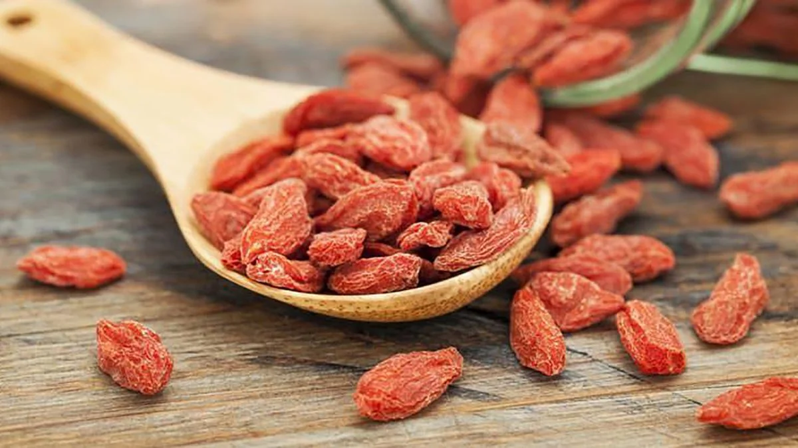
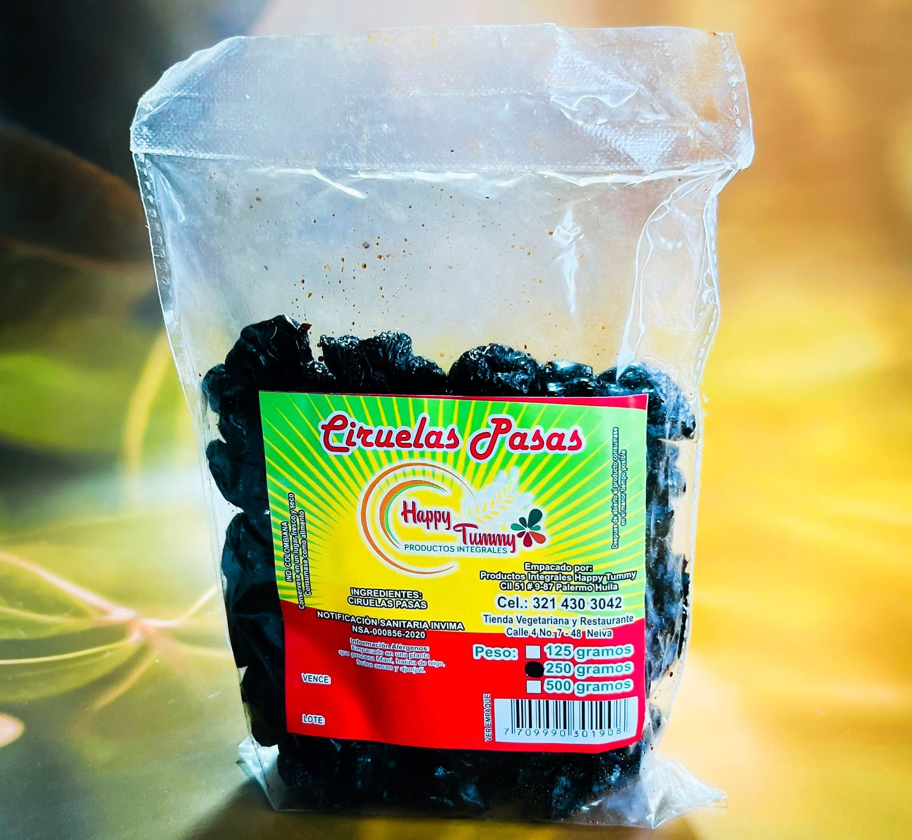
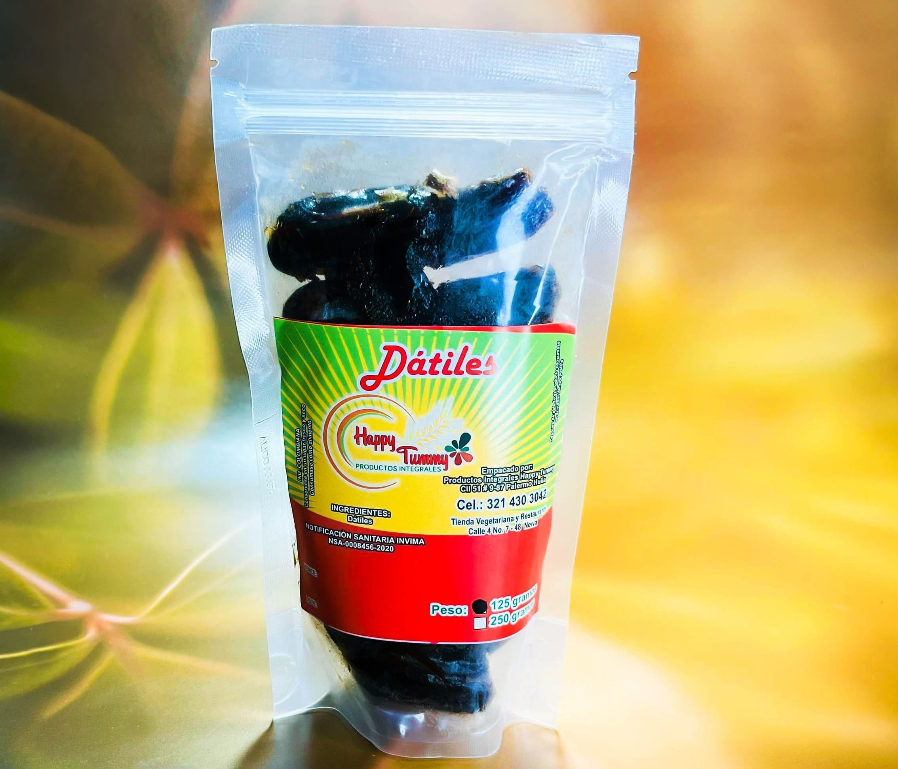
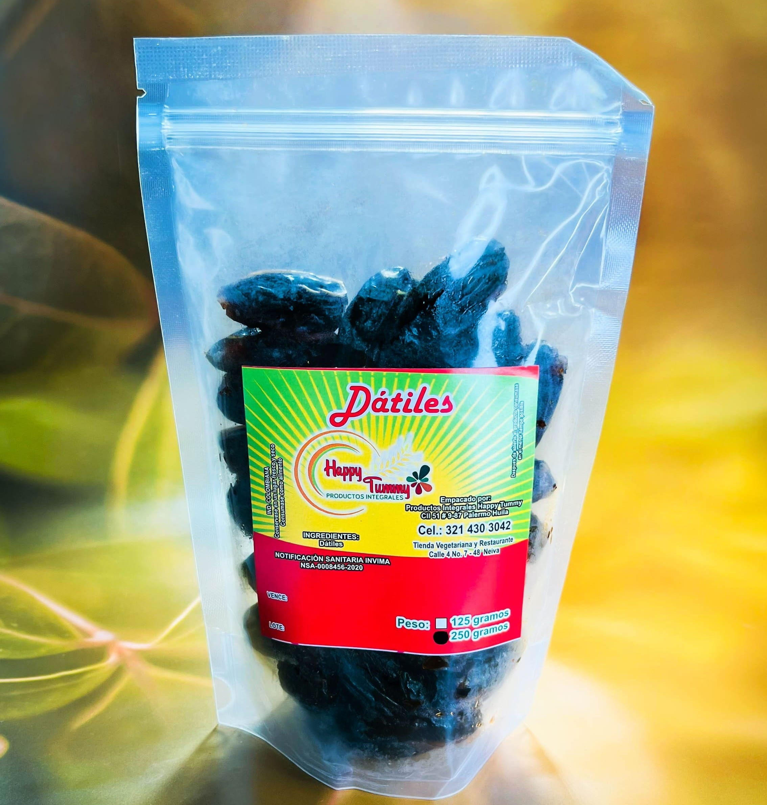
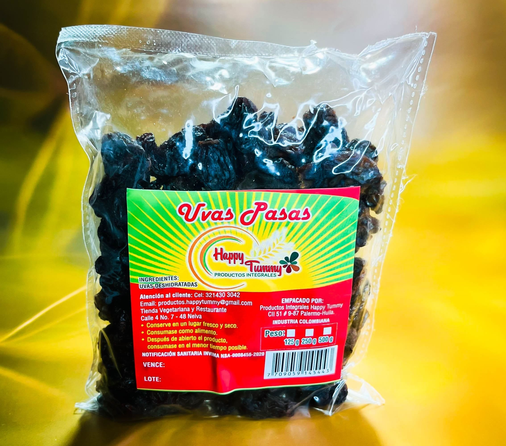

FRUTAS DESHIDRATADAS

Bayas De Goji x 100 grs
Refuerzan las defensas del cuerpo,
Protegen la vista,
Luchan contra el cansancio.
((Producto Temporalmente Agotado))

Ciruelas x 250 grs
Retrasan el deterioro de las capacidades
cognitivas en la vejez
Reducen el apetito
$13.000

Dátiles x 125 grs
Ayudan a aliviar el estreñimiento,
Excelente fuente de energía,
Reducen el colesterol malo.
$7.500

Dátiles x 250 grs
Ayudan a aliviar el estreñimiento,
Excelente fuente de energía,
Reducen el colesterol malo.
$15.000

Uvas Pasas x 250 grs
Ayudan a regular la digestión,
Ayudan a tratar trastornos oculares,
Podrían prevenir ciertos tumores.
$6.000
Bayas De Goji x 100 grs
Refuerzan las defensas del cuerpo,
Protegen la vista,
Luchan contra el cansancio.
((Producto Temporalmente Agotado))